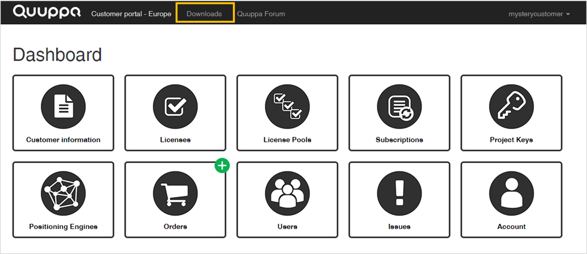

Communication Ports
The Generation Q Quuppa Locators use a single UDP port, 22100, to communicate with the Quuppa Positioning Engine (QPE).
For a more extensive list of all of the Quuppa communication ports, including those used by the LD Generation Locators and the various Quuppa applications, please see the Quuppa Communication Ports.pdf document, available in the Quuppa Customer Portal's (QCP) Download's section.
